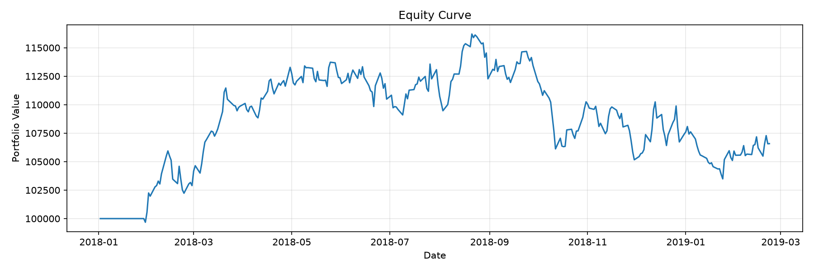
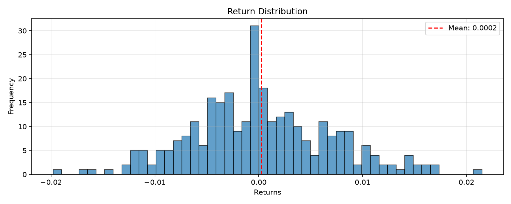

Symbol: SPY
Strategy: cross_sectional_momentum
Periods: 299
| Metric | Value |
|---|---|
| Total Return | 6.58% |
| Annualized Return | 5.52% |
| Annualized Volatility | 10.71% |
| Sharpe Ratio | 0.37 |
| Sortino Ratio | 0.62 |
| Calmar Ratio | 0.50 |
| Max Drawdown | -10.94% |
| Omega Ratio | 2.44 |
| Skewness | 0.20 |
| Kurtosis | 0.15 |
| VaR (95%) | -1.08% |
| CVaR (95%) | -1.32% |
| Metric | Value |
|---|---|
| Gross Book (mean sum|w|) | 0.56 |
| Net Exposure (book) | 0.19 |
| Net Exposure (framework) | 0.19 |
| Gross Turnover (book) | 0.17 |
| Turnover Charged by Model | 0.00 |
| Turnover Actually Charged | 0.17 |
| Cost Basis | book |
| Periods With a Book | 279/299 |
| Return Gap (framework - book, bps/period) | -2.95 |
| Return Gap (cumulative, pre-cost) | -8.55% |
| Book Total Return (pre-cost) | 8.22% |
| Reported Total Return (net of costs) | 6.58% |
The reported P&L and the costs both use the book convention: the return is sum_i w_i r_i and the costs are charged on the book (gross turnover, short legs, gross exposure). The net-exposure numbers above are shown for comparison.
| Metric | Value |
|---|---|
| Panel Pricing Mode | book |
The reported P&L is the true per-asset book return sum_i w_i r_i, and the costs are charged on the book: commission and slippage on its gross turnover sum_i |dw_i|, borrow on its short legs, funding on its gross exposure, and market impact per asset against that asset's own ADV. Residual approximation: the impact is the equal-weighted mean of the per-asset impacts over the whole panel (so a period in which only some names trade is charged less than the participation actually consumed). The capacity is reported twice: the basket-based estimate (an equal-weight basket that rebalances 1/n per constituent, least liquid name binding) and, next to it, the book-based estimate computed from the strategy's own trade sizes. The impact participation measurement in the panel book diagnostic above quantifies the residual approximation of the impact model (the equal-weighted mean of the per-asset impacts over the whole panel).
| Metric | Value |
|---|---|
| Total Trades | 128.00 |
| Winning Trades | 59.00 |
| Losing Trades | 69.00 |
| Win Rate | 46.09% |
| Avg Win | 0.82% |
| Avg Loss | 0.66% |
| Profit Factor | 1.00 |
| Expectancy | 0.0011 |
| Trades Closed at End | 2.00 |
| Pct Trades Closed at End | 1.56% |
| Field | Value |
|---|---|
| ASSET_0 / source_path | assets/example_data/sample_panel_ohlcv.csv |
| ASSET_0 / load_timestamp | 2026-10-20T03:30:05.231156Z |
| ASSET_0 / file_format | .csv |
| ASSET_0 / file_size_bytes | 151347 |
| ASSET_0 / symbol_filter | ASSET_0 |
| ASSET_0 / start_date_filter | N/A |
| ASSET_0 / end_date_filter | N/A |
| ASSET_0 / date_range_original | N/A |
| ASSET_0 / date_range_final | ('2018-01-01 00:00:00', '2019-02-22 00:00:00') |
| ASSET_0 / original_shape | (300, 5) |
| ASSET_0 / final_shape | (300, 5) |
| ASSET_0 / columns_original | ["open", "high", "low", "close", "volume"] |
| ASSET_0 / columns_final | ["open", "high", "low", "close", "volume"] |
| ASSET_0 / validation_passed | true |
| ASSET_0 / validation_messages | [] |
| ASSET_0 / transformations_applied | [] |
| ASSET_0 / checksum | 9b47dfcda7a08936 |
| ASSET_1 / source_path | assets/example_data/sample_panel_ohlcv.csv |
| ASSET_1 / load_timestamp | 2026-10-20T03:30:05.234485Z |
| ASSET_1 / file_format | .csv |
| ASSET_1 / file_size_bytes | 151347 |
| ASSET_1 / symbol_filter | ASSET_1 |
| ASSET_1 / start_date_filter | N/A |
| ASSET_1 / end_date_filter | N/A |
| ASSET_1 / date_range_original | N/A |
| ASSET_1 / date_range_final | ('2018-01-01 00:00:00', '2019-02-22 00:00:00') |
| ASSET_1 / original_shape | (300, 5) |
| ASSET_1 / final_shape | (300, 5) |
| ASSET_1 / columns_original | ["open", "high", "low", "close", "volume"] |
| ASSET_1 / columns_final | ["open", "high", "low", "close", "volume"] |
| ASSET_1 / validation_passed | true |
| ASSET_1 / validation_messages | [] |
| ASSET_1 / transformations_applied | [] |
| ASSET_1 / checksum | c7899bca89e1b208 |
| ASSET_3 / source_path | assets/example_data/sample_panel_ohlcv.csv |
| ASSET_3 / load_timestamp | 2026-10-20T03:30:05.236683Z |
| ASSET_3 / file_format | .csv |
| ASSET_3 / file_size_bytes | 151347 |
| ASSET_3 / symbol_filter | ASSET_3 |
| ASSET_3 / start_date_filter | N/A |
| ASSET_3 / end_date_filter | N/A |
| ASSET_3 / date_range_original | N/A |
| ASSET_3 / date_range_final | ('2018-01-01 00:00:00', '2019-02-22 00:00:00') |
| ASSET_3 / original_shape | (300, 5) |
| ASSET_3 / final_shape | (300, 5) |
| ASSET_3 / columns_original | ["open", "high", "low", "close", "volume"] |
| ASSET_3 / columns_final | ["open", "high", "low", "close", "volume"] |
| ASSET_3 / validation_passed | true |
| ASSET_3 / validation_messages | [] |
| ASSET_3 / transformations_applied | [] |
| ASSET_3 / checksum | 8cce99ac1a02175e |
| ASSET_2 / source_path | assets/example_data/sample_panel_ohlcv.csv |
| ASSET_2 / load_timestamp | 2026-10-20T03:30:05.239652Z |
| ASSET_2 / file_format | .csv |
| ASSET_2 / file_size_bytes | 151347 |
| ASSET_2 / symbol_filter | ASSET_2 |
| ASSET_2 / start_date_filter | N/A |
| ASSET_2 / end_date_filter | N/A |
| ASSET_2 / date_range_original | N/A |
| ASSET_2 / date_range_final | ('2018-01-01 00:00:00', '2019-02-22 00:00:00') |
| ASSET_2 / original_shape | (300, 5) |
| ASSET_2 / final_shape | (300, 5) |
| ASSET_2 / columns_original | ["open", "high", "low", "close", "volume"] |
| ASSET_2 / columns_final | ["open", "high", "low", "close", "volume"] |
| ASSET_2 / validation_passed | true |
| ASSET_2 / validation_messages | [] |
| ASSET_2 / transformations_applied | [] |
| ASSET_2 / checksum | 9c83988fbb64d099 |
| ASSET_4 / source_path | assets/example_data/sample_panel_ohlcv.csv |
| ASSET_4 / load_timestamp | 2026-10-20T03:30:05.241909Z |
| ASSET_4 / file_format | .csv |
| ASSET_4 / file_size_bytes | 151347 |
| ASSET_4 / symbol_filter | ASSET_4 |
| ASSET_4 / start_date_filter | N/A |
| ASSET_4 / end_date_filter | N/A |
| ASSET_4 / date_range_original | N/A |
| ASSET_4 / date_range_final | ('2018-01-01 00:00:00', '2019-02-22 00:00:00') |
| ASSET_4 / original_shape | (300, 5) |
| ASSET_4 / final_shape | (300, 5) |
| ASSET_4 / columns_original | ["open", "high", "low", "close", "volume"] |
| ASSET_4 / columns_final | ["open", "high", "low", "close", "volume"] |
| ASSET_4 / validation_passed | true |
| ASSET_4 / validation_messages | [] |
| ASSET_4 / transformations_applied | [] |
| ASSET_4 / checksum | 3ae0b207ca031dc0 |
| bias_controls_engaged | true |
| Field | Value |
|---|---|
| bias_score | 0.0 |
| surviving_symbols | ["ASSET_0", "ASSET_1", "ASSET_3", "ASSET_2", "ASSET_4"] |
| entered_symbols | [] |
| exited_symbols | [] |
| insufficient_data | [] |
| large_gaps | [] |

